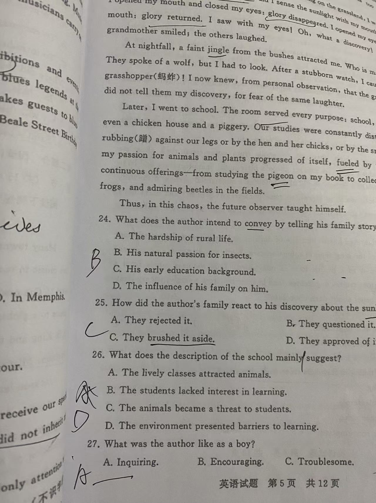

黄泰鑫的英语学习经验分享
2025年1月20日

大家好，我是黄泰鑫。作为一名高中生，在英语学习的道路上，我走过不少弯路，也总结了一些适合自己的方法。今天想把这些经验分享出来，希望能给同样在学习英语的同学们一些参考。
我认为英语学习的核心不是死记硬背，而是建立语言思维。一开始我也陷入过“背单词-忘单词-再背单词”的循环，后来发现，把单词放在语境中记忆，结合句子和文章去理解，不仅记得牢，还能知道怎么用。每天读一篇简短的英语短文，遇到不认识的单词标记出来，查清楚后再反复读，效果比单纯背单词表好太多。

我的核心学习方法
每天坚持的两项基础练习
巩固和输出同样重要
1. 听力：利用碎片化时间
我会在上下学路上、睡前听英语听力，不一定是考试类的材料，英文歌、英语播客、动画片段都可以。一开始听不懂没关系，先培养语感，慢慢就能抓住关键词，再到理解整句意思。
2. 阅读：精读+泛读结合
精读用来学语法、记单词，我会选教材或真题文章，逐句分析；泛读则是为了扩大知识面，我喜欢读一些英文小故事、科普短文，不用追求百分之百理解，重点是保持阅读的习惯。
3. 写作：从模仿到创作
刚开始写作文时，我会先模仿优秀范文的结构和句式，积累常用的连接词、句型。每周写一篇小作文，让老师或者同学帮忙批改，找出问题并改进。慢慢的，就能形成自己的写作风格。
学习心得

英语学习没有捷径，但找对方法能让过程更轻松。最重要的是坚持，每天进步一点点，积累起来就是很大的收获。另外，不要害怕犯错，语言本来就是用来交流的，大胆开口、大胆写作，才能真正掌握这门语言。
希望我的这些经验能帮到大家，也祝愿所有同学都能在英语学习中找到乐趣，取得进步！
Huang Taixin's English Learning Experience
January 20, 2025
Hello everyone, I'm Huang Taixin. As a high school student, I've taken many detours on the road of English learning, and also summarized some methods that suit me. Today I want to share these experiences, hoping to give some references to students who are also learning English.
I believe the core of English learning is not rote memorization, but building language thinking. At first, I also fell into the cycle of "memorizing words - forgetting words - memorizing words again". Later, I found that remembering words in context and understanding them with sentences and articles not only makes them memorable, but also helps me know how to use them. Reading a short English passage every day, marking out unfamiliar words, checking them and reading again, the effect is much better than just reciting word lists.
My Core Learning Methods
Daily English reading check-in
Practicing listening in fragmented time
Two basic exercises I stick to every day
Organizing wrong questions and knowledge points
Consolidation and output are equally important
1. Listening: Use fragmented time
I listen to English listening on my way to and from school, and before going to bed. It doesn't have to be exam materials - English songs, podcasts, and animation clips are all good. It's okay if you don't understand at first. Cultivate your sense of language first, and gradually you can catch key words and then understand the whole sentence.
2. Reading: Combine intensive and extensive reading
Intensive reading is for learning grammar and memorizing words. I choose textbooks or real exam articles and analyze them sentence by sentence; extensive reading is to expand knowledge. I like reading short English stories and popular science articles. There's no need to pursue 100% understanding - the key is to keep the habit of reading.
3. Writing: From imitation to creation
When I first started writing compositions, I would imitate the structure and sentence patterns of excellent model essays, and accumulate commonly used conjunctions and sentence patterns. I write a short composition every week and ask teachers or classmates to help correct it, find out problems and improve. Slowly, I can form my own writing style.
Learning Insights
There is no shortcut to English learning, but finding the right method can make the process easier. The most important thing is persistence. Making a little progress every day adds up to great gains. In addition, don't be afraid of making mistakes. Language is meant for communication. Only by speaking and writing bravely can you really master this language.
I hope my experiences can help you, and wish all students can find fun and make progress in English learning!
{kind=link}
{kind=link}
{kind=link}
{kind=link}
{kind=link}